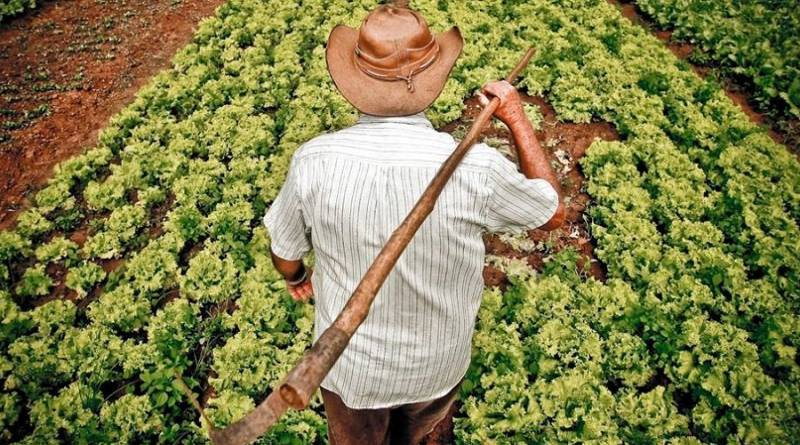
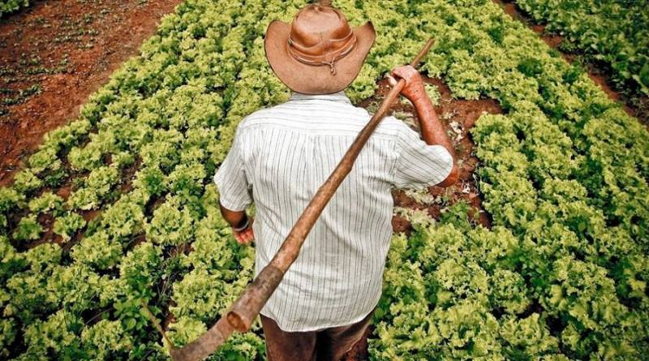
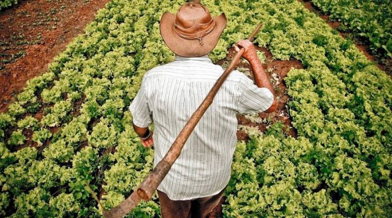

O O campo desempenha um papel fundamental para a cidade, pois é nele que muitas das nossas matérias-primas, como alimentos,
fibras e recursos naturais, são produzidas, garantindo o abastecimento e a sustentabilidade urbana. Além disso, o campo ajuda a equilibrar
o meio ambiente, promovendo a preservação de áreas verdes, a manutenção da biodiversidade e a regulação do clima, o que é essencial para a qualidade
de vida na cidade. Ele também oferece espaços de lazer, contato com a natureza e atividades ao ar livre, contribuindo para o bem-estar físico e mental
dos moradores urbanos. Sem o campo, a cidade enfrentaria dificuldades maiores de abastecimento, aumento na poluição e uma menor conexão com a natureza,
o que tornaria a vida mais difícil e menos equilibrada. Portanto, a relação entre o campo e a cidade é de grande importância, pois um complementa o
outro, promovendo um desenvolvimento mais sustentável, saudável e harmonioso para todos.

A Cidade
A cidade desempenha um papel essencial para o campo, pois é o centro de consumo, comércio, educação, saúde e inovação,
oferecendo oportunidades que atraem pessoas do campo em busca de melhores condições de vida, trabalho e acesso a serviços essenciais.
Além disso, as cidades são polos de desenvolvimento econômico, tecnológico e cultural, que impulsionam a produção agrícola e rural ao criar mercados,
infraestrutura e tecnologias que facilitam a produção e distribuição de alimentos e recursos naturais. A urbanização também incentiva a troca de conhecimentos,
o aprimoramento de técnicas agrícolas e o fortalecimento de cadeias produtivas, beneficiando o campo como um todo. Assim, a cidade e o campo estão
interligados de forma vital, formando um ciclo de troca e apoio mútuo que promove o crescimento sustentável de toda a sociedade.
Como o Campo e a Cidade se Conectam
Apesar de parecerem opostos, o campo e a cidade estão interligados de várias maneiras. O campo fornece alimentos, recursos naturais
e espaço para lazer, enquanto a cidade depende do campo para abastecimento de alimentos, matérias-primas e até mesmo para o turismo. Além disso,
muitas pessoas que vivem na cidade vão ao campo para descansar,fazer atividades ao ar livre ou trabalhar na agricultura. Essa conexão mostra que
ambos são essenciais para o equilíbrio social, econômico e ambiental.
 
